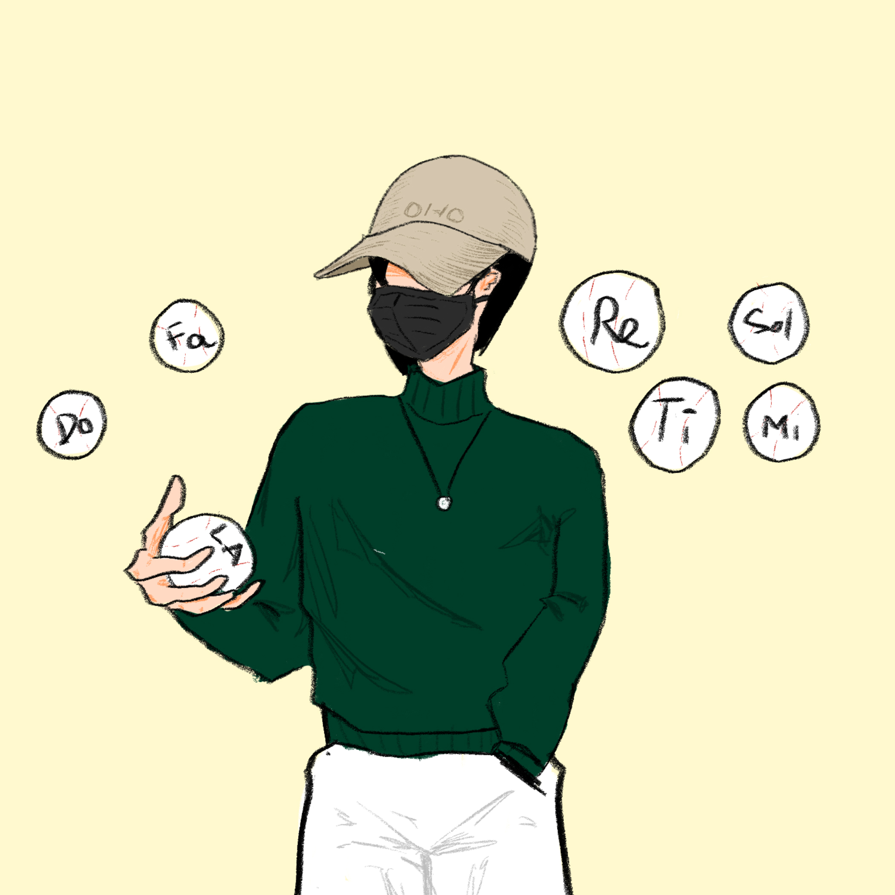

Do, Re, Mi, Fa, Sol, La, Ti
You may find these things familiar. You may hear them in a kindergartener’s singing class, in a piano lesson, or in that song from “The Sound of Music." You may know that they are the white keys of a piano. You may know it as an ascending C major scale. You may see them in every single song. You may know that each of them is called a "pitch." But why do they exist? Why are there only seven names for them when, in fact, there are 12 keys—black and white—present on a piano keyboard? How do we know if they are “that note" or not?
The most basic answer comes in the definition of pitches. A pitch is commonly regarded as a degree to determine if a sound is high or low. More specifically, “pitch” is a quality of sound that is determined by its rate of vibration: higher frequencies make a higher tone, and lower frequencies make a lower sound. There are two main types of pitches: definite—one that can be easily discerned—and indefinite. Based on this, people can infer which instrument is pitched and which is unpitched.
There are 12 equally-spaced pitches that are popular in music. These, in order, are known as the chromatic scale. The difference between each is called a "semitone," two of which make up a tone, and twelve of which make up an octave. There are 7 octaves on a piano, from the 1st to the 7th, while there are nearly 4 on a guitar. The piano’s 4th octave’s C is called Middle C; as the name suggests, it is in the middle of the keyboard. Another basic scale in music is the C major scale, which involves white keys on the piano: C, D, E, F, G, A, and B. Any pitch from the 12-tone scale is named after these notes, with an optional sharp (♯) meaning "a semitone up" or a flat (♭) meaning "a semitone down."
So, how do we define each pitch in terms of its frequency? By categorizing the frequency of the 4th octave A (the A right above Middle C), we can infer several types of tunings. The most common type is the 440 Hz (Stuttgart) tuning, whose A4 has a frequency of 440 Hz, or alternatively, yields 440 vibrations per second. Besides, there are other tunings: A432, A415, and A466 for instance, all defining the note A’s frequency. The ratio between the frequencies of two notes that are an octave apart is always 1:2; hence, the ratio between the frequencies of two notes that differ by a semitone is 1: 122 . As a result, we can assign each pitch a different of frequency.
So, how do we define each pitch in terms of its frequency? By categorizing the frequency of the 4th octave A (the A right above Middle C), we can infer several types of tunings. The most common type is the 440 Hz (Stuttgart) tuning, whose A4 has a frequency of 440 Hz, or alternatively, yields 440 vibrations per second. Besides, there are other tunings: A432, A415, and A466 for instance, all defining the note A’s frequency. The ratio between the frequencies of two notes that are an octave apart is always 1:2; hence, the ratio between the frequencies of two notes that differ by a semitone is 1: 122 . As a result, we can assign each pitch a different of frequency.
We have come through several definitions regarding pitches. Now, let’s put it in comparison with a similar concept: timbre. Both timbre and pitch refer to a quality of sound and are therefore easily mistaken. While the pitch is more about the highness of the sound, the timbre is more about the distinctiveness of the tone, or tone color, of it. Because of timbre, most people can recognize the difference between a violin sound and a saxophone sound, even when they play the same note.
In summary, “pitch” is a fundamental concept in music related to the frequency of a sound. The chromatic scale, which includes 12 pitches with names, is frequently used in music, while some musicians make use of microtones. Though similar, pitch and timbre are two distinct definitions, in which timbre refers to the color of the sound, making different instruments and voices distinguishable.